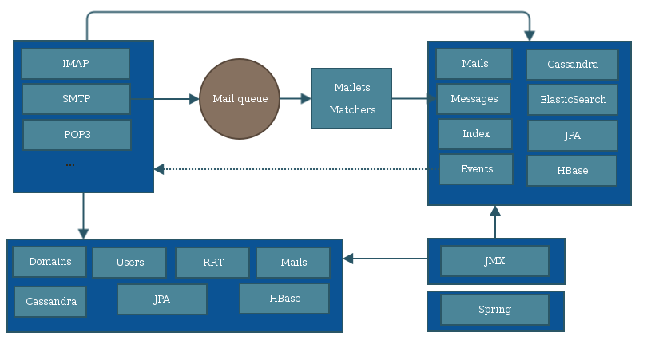
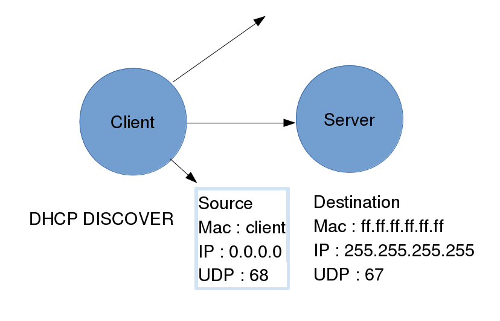
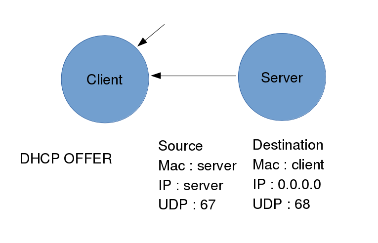
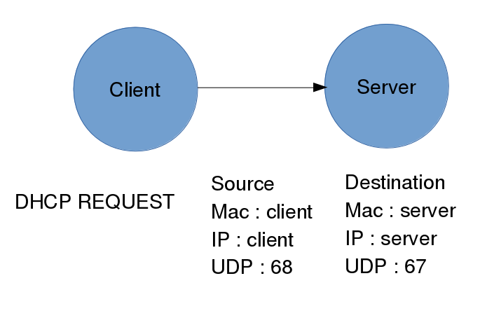
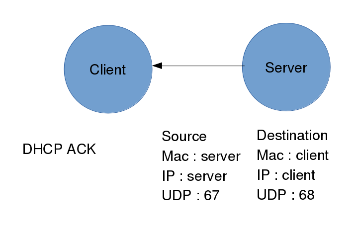

Open-up
System administration

Speaker : Benoit Tellier
Retrieve this presentation online : https://rawgit.com/chibenwa/openup02_01/master/presentation/index.html
And on GitHub
Why this presentation ?
- Who am I ?
- Who you are !
- Objectives of this semester
- Open Source DHCP server
Who am I ?
Me
- Hobbies :
- Climbing
- Play board games
- Coding
- Etc...
System administrator at MiNET
ISP for ~700 student
Relying on Free technology
Infrastructure and system administration
MiNET's network

What I did at MiNET
- Administrative work
- Storage for virtual machine disks with ZFS
- OpenStack infrastructure deployment
- Monitoring improvement with Zabbix
- Design hosting system for users website
- Supervise FireWall upgrade
- Etc...
Cyrus' problem
A hard to understand code


Sharding, passive replication
Maildir
James
Free Mail server from the Apache Foundation

Mail server chosen for OpenPaas
Committer for ~ 1 year
JAMES internals
James distributed architecture

James Buzz Worlds
- Agile, SCRUM, CI (git, github, jenkins, docker)
- Java 8
- Cassandra, ElasticSearch, Kafka
About you !
Professional project
- Who wants to be a developer ?
- Who wants to be a DevOps ?
- Who wants to be a SysAdmin ?
- Who have other projects ?
About you (again)
- Who already deployed stuff on a server ?
- Who already deployed stuff on an OpenSource server ?
- Who already had real users ?
- Who created and administrate his own website ?
- Who already handled infrastructure projects ?
- Who already used a Cloud ? Which one ?
About you (again)
- Do you have a Github account ?
- Who already contributed to OpenSource projects ?
- Do you write tests ?
- Do you use ever used a CI tool ?
- Do you ever practiced agile development ?
Hall of Fame !
Expectations...
The upcoming semester
- Master IT infrastructure
- Configure services for local networks
- Have knowledge about Server Roles and Installation of servers
- Server Maintenance
- Performance Management
- Monitoring and alerting services
Why System administration matters
- System administrator
- Collegues
- Understand your "users"
- Better knowledge of infrastructure
Time management
- Lecture: 13 hours
- Mini-project: 40 hours
- Practice: 26 hours
- Exams : 6 hours
- DHCP server
- DNS server
- LDAP
- CIFS
- Docker and a simple website
- Advanced web architecture
- Exam
- Mail servers
- Advanced mail architecture
- Monitoring
- Logs management
- High Availability
- Configuration management threw Git
- OpenSouce organisations and history
Evaluating your work
- Class attendance 25%
- Mid-term exam 25%
- Final exam 50%
Project list
- Unattended installation
- Server supervision
- OBM
- Migration scripts from Zimbra to OBM
- Vtiger CRM + LDAP authentication
- Mail server (Cyrus)
- Mail server (James)
- Active Directory Server
Project planning
| Event | Date |
|---|---|
| Course presentation | 19/02 |
| Final project list | 04/03 |
| Resuts return | 20/05 |
| Project presentation | 27/05 |
DHCPD
DHCP protocol
- Obtain network parameters
- BOOTP extension (Bootstrap Protocol)
DHCP protocol

DHCP protocol

DHCP protocol

DHCP protocol

A DHCP server
ISC DHCP is the reference
More information on ISC website and on Wikipedia
Installation (Debian)
Paquet isc-dhcp-server on Debian and Ubuntu :
# apt-get install isc-dhcp-server/etc/init.d/dhcpd stop/start/restart
Command name : dhcpd
Installation (Debian)
Paquet dhcp on CentOS and Fedora :
# yum install dhcpThen
# /etc/init.d/dhcpd start
# chkconfig dhcpd onConfiguration
File : /etc/dhcp/dhcpd.conf
Configuration
# man dhcpd.conf
authoritative ;
ddns-update-style none ;
default-lease-time 259200 ;
# 3 jours
log-facility local3 ;
max-lease-time 604800 ;
# 1 semaine
server-identifier dhcp.example.com ;
use-host-decl-names on ;
Configuration
# man dhcp-options
domain-name "example.com" ;
domain-name-servers ns0.example.com , ns1.example.com ;
lpr-servers lpr.example.com ;
nntp-server news.example.com ;
ntp-servers ntp.example.com ;
pop-server mail.example.com ;
smtp-server mail.example.com ;
subnet-mask 255.255.255.0 ;
www-server www.example.com ;
Configuration : dynamic
subnet 198.51.100.0 netmask 255.255.255.0
{
option routers 198.51.100.1 ;
option broadcast-address 198.51.100.255 ;
pool
{
range 198.51.100.2 198.51.100.254 ;
default-lease-time 3600 ;
max-lease-time 3600 ;
}
}
Configuration : static
group
{
option domain-name "example.com" ;
host test1.example.com
{
option host-name "test1.example.com" ;
fixed-address test1.example.com ;
hardware ethernet 00:60:08:0e:71:8f ;
}
}
DHCP at MiNET
Needs
- Traceability
- Reflect subsciption
- Central, easy edition
What we did?
Modify DHCPD to use REST calls upon DHCP REQUEST
Let us handle business logic in our adherent management application
Very little code in DHCPD !
Cons
- Apply the patch on future release
- Introduce buggs in our DHCP server ?
Security
- Switchs deny DHCP servers for clients
- RADIUS authentication
- Arpwatch is watching !
Acknowledgments
Patch by Guillaume Rose
On Github
Why this example ?
Highlights how Open Source allows one to reach his goals
Nothing paid, just skills